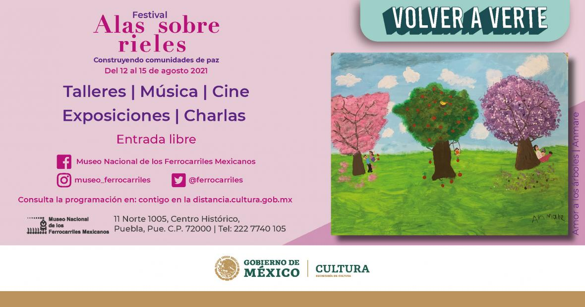

Noticias
El Festival Alas Sobre Rieles. Construyendo comunidades de paz
El Festival Alas Sobre Rieles. Construyendo comunidades de paz se realizará del 12 al 15 de agosto.La Secretaría de Cultura del Gobierno de México, a través del Museo Nacional de los Ferrocarriles Mexicanos (MNFM), presenta el programa de actividades del festival “Alas sobre rieles. Construyendo comunidades de paz”, el cual busca un diálogo con el público infantil y familiar a través de la reflexión sobre diversos temas y problemáticas ambientales.